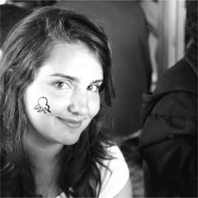

Prof. Joshua S. Weitz is the Patton Distinguished Professor of Biological Sciences and the Founding Director of the Quantitative Biosciences Graduate Program at the Georgia Institute of Technology. Weitz leads a multidisciplinary research team whose central goal is to understand how viruses transform human health and the fate of our planet.
Ben Lopman is Professor of Epidemiology at the Rollins School of Public Health at Emory University. He is jointly appointed in the Department of Environmental Health and the Population Biology Ecology and Evolution graduate program. Prof. Lopman’s group conducts research on the epidemiology of human viruses and interventions such as vaccines to control them.
David Demory is a post-doctoral fellow at the School of Biological sciences at the Georgia Institute of Technology. David's research mainly focuses on microbial oceanography and marine viruses, but he is also interested in epidemiology. David is particularly interested in modeling microbe-virus dynamics and in integrating mathematical models with experimental and field datasets.
Alicia Kraay is a post-doctoral fellow in the Epidemiology department at the Rollins School of Public Health at Emory University. Alicia’s research focuses on the epidemiology of viral diseases, including rotavirus, norovirus, and, now, Covid-19. She is particularly interested in how genetic evolution, vaccine use, and environmental pressures interact to shape the spatial spread of these pathogens.
Dr. Adriana Lucia-Sanz joined the Weitz group in March 2020 from Dr. Manrubia’s group in Spain. They hold a PhD on Virus Evolution, and their principal research interests focus on how biological systems behave in a quantitative and qualitative way, how we can describe them from the ground level, and to what extent a model captures the phenomenology observed in nature. They spearheaded an initiative to chat about science safely during the Covid-19 pandemic.
Kristin Nelson is an Assistant Professor of Epidemiology at the Rollins School of Public Health at Emory University. Her research focuses on the epidemiology of respiratory diseases, primarily tuberculosis and Covid-19, and interventions including vaccines to reduce their global burden.

Andreea Magalie graduated in 2018 with a BA in mathematics from Princeton University. She began a PhD in Quantitative Biosciences at Georgia Tech that same year, when she joined the Weitz Group. Her research focuses on microbial dynamics, microbial dormancy, and recently, on Covid-19 epidemiological models. She is also interested in agent-based models and social network dynamics.
Rogelio Rodriguez-Gonzalez received his Bachelor of Science in Genomic Sciences from UNAM in Mexico in 2016. In the same year, Rogelio started working as a research technician in the laboratories of Dr.’s Meyer and Karr at the Icahn School of Medicine at Mount Sinai. In 2017, Rogelio moved to Georgia Tech to work as a technician for the Weitz Group. A year later, he started his PhD in the Quantitative Biosciences graduate program. His current work involves studying the ecological interactions between phage and microbes inside mammalian hosts (e.g., mice). He uses computational models to study the ecological interactions that drive the success or failure of phage therapy of bacterial infections.
Conan Zhao is a PhD student in the Quantitative Biosciences Graduate Program at the Georgia Institute of Technology. He works in the laboratory of Sam Brown where he focuses on respiratory infection dynamics and designing computational methods for microbiome analysis.
Research on shield immunity is made possible through support, in part, by the following: